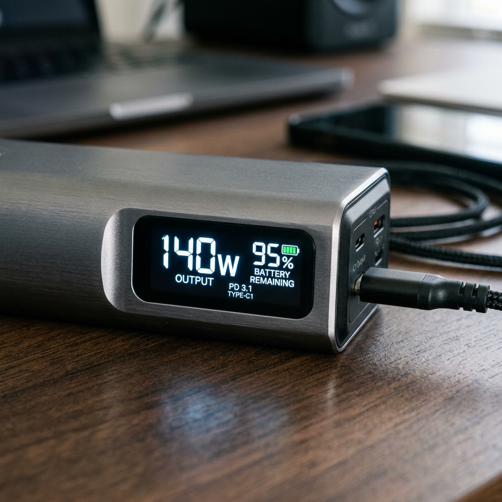

The Best Fast Charging Laptop Power Bank: Never Settle for a Dead Battery Again
The Anxiety of the 'Low Battery' Warning: Why Your Current Gear Isn't Cutting It
You’re mid-flight, finishing the final slides of a high-stakes presentation, or perhaps you're in a remote café closing a deal. Suddenly, the screen dims. The dreaded 5% warning appears. You plug in your standard power bank, only to realize it’s charging your laptop slower than the battery is draining. It’s a helpless feeling—owning a high-performance machine that is effectively a paperweight because you lack the mobile juice to sustain it.
For the modern professional, a fast charging laptop power bank isn't a luxury; it's a critical piece of infrastructure. Most portable chargers on the market are designed for smartphones, pushing a measly 20W or 30W. To keep a MacBook Pro, a Dell XPS, or a high-end gaming laptop running at full throttle, you need raw, unadulterated power. You need a device that can match the output of a wall charger while sitting in the palm of your hand.
How the Ultimate Fast Charging Power Bank Compares
Before we dive into the specifics of the market leader, let’s look at how a true high-performance unit stacks up against the standard portable chargers most people mistakenly rely on.
| Feature | Anker Prime 27,650mAh (250W) | Standard Power Bank | Verdict |
|---|---|---|---|
| Total Output | 250W Max | 30W - 65W | Anker Prime is 4x faster |
| Single Port Speed | 140W (PD 3.1) | 18W - 45W | Anker Prime powers MacBook Pro 16" at full speed |
| Capacity | 27,650mAh | 10,000mAh - 20,000mAh | Anker Prime offers multiple full charges |
| Smart Features | App Control & Digital Display | Simple LED Lights | Anker Prime provides real-time data |
| Recharge Speed | 170W Rapid Recharge | 15W - 30W | Anker Prime recharges in minutes, not hours |
The Unrivaled King: Anker Prime 27,650mAh Power Bank (250W)
When it comes to the fast charging laptop power bank category, the Anker Prime 250W stands in a league of its own. This isn't just a battery; it's a portable power station engineered for those who cannot afford downtime. It solves the three primary pain points of mobile computing: speed, capacity, and intelligence.
1. Blazing 250W Total Output
The standout feature is the staggering 250W total output across three ports. Equipped with the latest PD 3.1 technology, the single USB-C port can deliver up to 140W. This means you can charge a MacBook Pro 16 to 50% in just 28 minutes. While other power banks struggle to keep the battery percentage stable, the Anker Prime actively increases it, even under heavy rendering or gaming workloads.
2. Massive Capacity Without the Bulk
With a 27,650mAh capacity, this unit is the largest size allowed by the FAA for air travel without special permission. It’s designed to be the ultimate travel companion. You can charge an iPhone 14 nearly 5 times or give a 13-inch MacBook Air more than one full charge. It’s the peace of mind that comes from knowing you have a full day of extra work time tucked in your backpack.

3. Smart App Integration and Real-Time Monitoring
One of the most frustrating aspects of cheap power banks is the guessing game. How much juice is left? How fast is it actually charging? The Anker Prime eliminates this with a vibrant built-in digital display and Bluetooth app connectivity. You can monitor the health of the battery, see the exact wattage going into each device, and even use the 'Find My Device' sound alert if it goes missing in your office or bag.
Why High-Intent Buyers Choose the Anker Prime
- Future-Proof Technology: With PD 3.1, you are ready for the next generation of high-power laptops.
- Dual-Way Fast Charging: Not only does it charge your devices fast, but the power bank itself recharges at 170W. You can go from 0% to 100% in roughly 37 minutes using a compatible wall charger.
- Compact Aesthetics: Despite its power, it’s roughly the size of a soda can, making it incredibly portable for its specs.
- Safety First: ActiveShield 2.0 technology monitors temperature 3 million times per day to prevent overheating.
Final Verdict: Is It Worth It?
If you are a casual user who only needs to top up a phone, this might be overkill. However, if you are a creative professional, a software engineer, or a frequent traveler who relies on a laptop to generate income, the Anker Prime 27,650mAh (250W) is a mandatory investment. It eliminates the "low battery" bottleneck and ensures that your mobile office is truly mobile.
Stop tethering yourself to airport walls and coffee shop corners. Take control of your power and upgrade to the fastest charging laptop power bank on the market today.